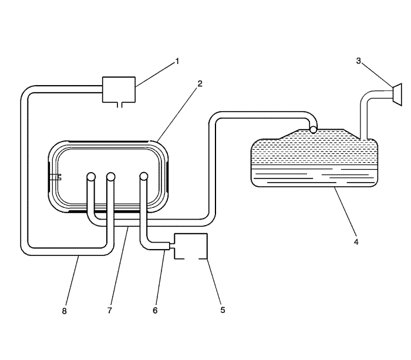

Descripción del sistema de control de emisiones de vapor
Operación del sistema EVAP

|
|---|
| (1) | Válvula magnética de purga de cartucho de EVAP |
| (2) | Depósito EVAP |
| (3) | Boca de llenado/tapa de llenado de combustible |
| (4) | Depósito de combustible |
| (5) | Entrada de aire de EVAP |
| (6) | Tubería de ventilación de EVAP |
| (7) | Tubería de vapor de EVAP |
| (8) | Tubería de purga de EVAP |
El sistema de control de emisiones evaporativas (EVAP) limita que los vapores de combustible escapen a la atmósfera. Debido a la presión del depósito de combustible, les es posible a los vapores del depósito salir del mismo a través del tubo de vapor, hacia dentro del depósito EVAP. El carbón de este depósito absorbe y almacena los vapores del combustible. El exceso de presión se vacía a través de la tubería de ventilación y la entrada de aire EVAP en la atmósfera. Los depósitos EVAP almacenan los vapores de combustible, hasta que el motor puede utilizarlos. En el momento adecuado, el módulo de control comandará abrir la válvula del solenoide de purga EVAP, permitiendo que el vacío del motor se aplique al depósito EVAP. El aire fresco pasará por la entrada de aire EVAP y la tubería de ventilación hasta los depósitos EVAP. El aire fresco pasa a través del depósito EVAP, empujando los vapores de combustible del carbón. La mezcla de vapor aire/combustible continúa a través del tubo de purga EVAP y de la válvula de solenoide de purga EVAP hasta el múltiple de admisión, para ser consumida durante la combustión normal.
Componentes del sistema EVAP
El sistema EVAP está realizado con los siguientes componentes:
| • | La válvula magnética de purga de cartucho de EVAP |
| • | La boca de llenado/tapa de llenado de combustible |
| • | El depósito de combustible |
| • | La entrada de aire de EVAP |
| • | La tubería de vapor de EVAP |
| • | La tubería de ventilación de EVAP |
| • | La tubería de purga de EVAP |
Depósito EVAP
El depósito EVAP es una unidad sellada con 3 puertos.
El depósito está lleno de bolitas de carbón, que se usan para absorber y almacenar los vapores de combustible. El vapor del combustible se almacena en el depósito, hasta que el módulo de control del motor determina que el vapor puede ser consumido en el proceso normal de combustión.
Válvula solenoide de purga EVAP
La válvula de solenoide de purga EVAP controla el flujo de vapores desde el sistema EVAP hacia el múltiple de admisión. El módulo de control modula el ancho de pulso (PWM) para esta válvula normalmente cerrada, con el fin de controlar de forma precisa el flujo de vapor de combustible hacia el motor.
Entrada de aire de EVAP
La entrada de aire de EVAP filtra el aire que entra en el depósito EVAP.
| © Copyright Chevrolet Europe. All rights reserved |